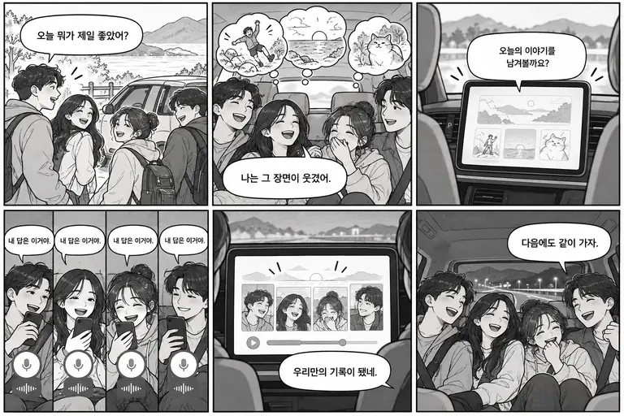

CANDIDATE 13 / 기억·일상
돌아오는 길의 인터뷰
오늘 가장 웃겼던 순간을 함께 다시 웃는다.
탐색 후보사업 모델 검증 전01 / IDEA NOTES
누구의 어떤 순간을 바꿀까.
| 같은 기준 | 검토 내용 |
|---|---|
| 첫 사용자 | 가족 여행의 동승자 |
| 문제 정의 | 여행 직후의 생생한 기억을 남기지 못한다. |
| 감성 포인트 | 오늘 가장 웃겼던 순간을 함께 다시 웃는다. |
| 실용적인 해결 | 정해진 질문과 답변을 여행 한 페이지로 정리. |
| 차량에서의 가치 | 귀가 이동의 여운을 동승자 공동 기록으로 연결. |
STORYBOARD / 6 CUTS
문제에서 안심과 기쁨으로 이어지는 여섯 장면.

02 / IDEA NOTES
가치가 거래로 이어지는가.
| 같은 기준 | 검토 내용 |
|---|---|
| 지불 고객 | 가족·숙박/관광 사업자 |
| 수익 모델 가설 | 여행별 기념 상품·인쇄 추가 판매 가설 |
| 사용 계기·반복성 | 기념일·동행·귀가 시점. 일회 구매와 반복 사용을 구분해 검증. |
| 경쟁·중복·결합 | 화자 자동 분리·녹음 동의 추정·LLM 요약 가정 없음. |
| 첫 고객 확보 | 가족·숙박/관광 사업자 중 작은 범위로 실제 처리·사용 실증에 참여할 1곳 또는 사용자군부터 확보. 가격·매출은 조사 전 확정하지 않음. |
03 / IDEA NOTES
지금의 재료로 만드는 범위.
| 같은 기준 | 검토 내용 |
|---|---|
| 핵심 SDK | NaviHelper(귀가 맥락) — 안내상 사용 가능. 팀 실행 검증 필요. |
| 조건부 SDK | STT · TTS — 권한·실행 확인 전 핵심 의존 금지. |
| 자체 개발·데이터 | 참여 동의·화자 수동 선택·템플릿·내보내기 |
| 3인 MVP | 질문 3개·화자 직접 선택·기록 카드 |
| 접근 제한 시 대안 | 위치·음성 미지원 시 정차 중 수동 선택·입력으로 대체. 장소 자동 실행·음성 기록 자체가 핵심인 후보는 이 대안만으로 완성됐다고 보지 않음. |
| 공통 제약 | Gleo·UWB·LLM·직접 결제·원격 Fleet 권한을 가정하지 않음. 외부 서버는 HTTPS와 끊김 복구 실증. 차량 값은 capability, 위치는 유효 시각 확인. |
입력과 선택 화면은 실제 CarUxRestrictions를 따릅니다. 차량의 도착·시동·문 상태만으로 주문 수령·업무 완료·인수 동의를 자동 확정하지 않습니다.
04 / IDEA NOTES
심사에 필요한 증거와 첫 관문.
| 공식 평가 항목 | 보여줄 증거 |
|---|---|
| 차량특화성 | 귀가 이동의 여운을 동승자 공동 기록으로 연결. 휴대폰 사용과 비교해 실제 우위를 확인. |
| 창의성 | 오늘 가장 웃겼던 순간을 함께 다시 웃는다. 기존 서비스 조사와 사용자 경험 비교로 차별성 입증. |
| 기술 활용성 | NaviHelper(귀가 맥락)를 완결된 흐름으로 연결하고 권한 거절·값 없음·통신 실패 처리 시연. |
| 사업성 | 가족·숙박/관광 사업자의 문제 빈도·도입 의향·지불 이유 확인. 수수료는 실제 거래 처리 근거 필요. |
첫 번째 검증: 기록 품질·동승자 참여·상품 구매 의향 확인
현대자동차의 ‘휴머니티를 향한 진보’에 대한 팀의 해석: 오늘 가장 웃겼던 순간을 함께 다시 웃는다. 사용자의 선택권과 확인을 남기고, 기능보다 사람의 상황을 먼저 설계합니다. 브랜드 문구 자체가 공식 가산점이라는 근거는 없습니다.
담당 1
SDK·차량 상태·내비 연동과 권한 검증
담당 2
앱 상태·데이터·필요한 서버와 오류 처리
담당 3
차량 UX·사용자 인터뷰·도입 및 거래 검증
공식 근거·확인 상태
- 공모전 개발 환경 — 안내 SDK 5종. 주제를 5종 기능만으로 제한한다는 의미는 아님.
- 프로젝트 생성·SDK 사용 신청 — Vehicle State·NaviHelper 사용 가능, 위치·STT·TTS·Vehicle Control 준비 중 기재. 최신 프로젝트 화면과 실제 실행을 별도 확인해야 함.
- Vehicle · NaviHelper — 차종별 지원·권한·오류 확인 필요.
- 플랫폼·네트워크 가이드 — 외부 통신은 앱 권한·HTTPS·연결 끊김 실증 필요.
- 공모전 심사 기준 — 차량특화성·창의성·기술 활용성·사업성. 세부 배점 비공개.
- 현대자동차 브랜드 비전 — 휴머니티를 향한 진보. 아래 사람 중심 설계는 팀 해석.
공개 문서 재확인 2026.10.27 · 팀 프로젝트의 SDK 권한·에뮬레이터 실행은 확인 전. 시장 규모·가격·유지율·매출 예상은 확정하지 않음.